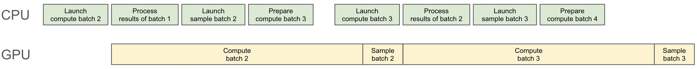
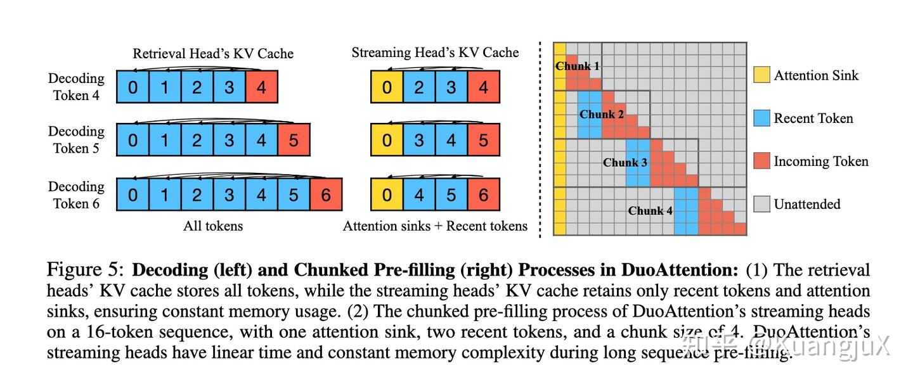
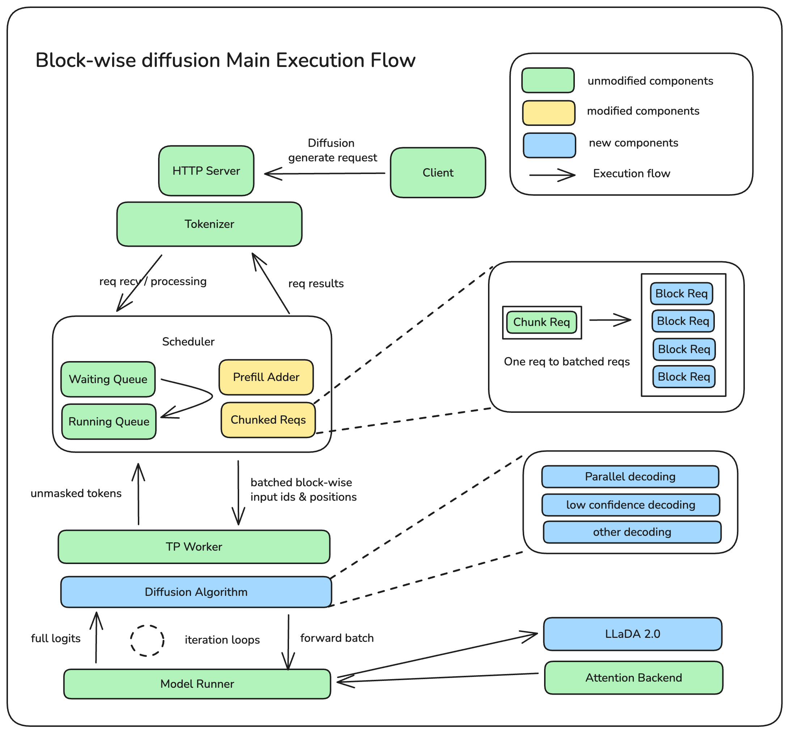

Advanced Optimization Techniques for Large-Scale ML Systems
在 LLM 推理中，batch scheduling 的 CPU 开销会导致 GPU 出现 idle bubble。Zero-Overhead Scheduling 通过 CPU-GPU overlap 实现调度零开销：在 GPU 执行当前 batch 的 forward pass 时，CPU 并行完成下一个 batch 的调度决策和数据准备。
1. Placeholder Buffering：预分配 placeholder slots，避免动态内存分配的开销。新请求到来时只需填充 placeholder，不需要 resize tensor。
2. Async Scheduling：调度逻辑在独立线程运行，通过 double-buffering 机制与 GPU kernel 执行完全 overlap。
3. CPU-S 与 CPU-L 分离：将 CPU 操作分为 short-latency (CPU-S) 和 long-latency (CPU-L) 两类。CPU-S 包含 token sampling、detokenize 等轻量操作；CPU-L 包含 scheduling policy、radix tree 操作等重量操作。两者分别 pipeline 化。

观察 CPU-S、CPU-L 与 GPU 的流水线重叠。点击 "Play" 启动动画。
class OverlapScheduler:
def __init__(self, max_batch_size, num_placeholders):
self.front_buffer = BatchBuffer(max_batch_size)
self.back_buffer = BatchBuffer(max_batch_size)
self.placeholder_pool = PlaceholderPool(num_placeholders)
self.schedule_thread = Thread(target=self._schedule_loop)
def _schedule_loop(self):
"""CPU-L: 在后台线程运行调度策略"""
while not self.stopped:
# 等待 GPU forward 开始
self.gpu_start_event.wait()
# CPU-L operations (overlap with GPU)
new_reqs = self.request_queue.drain()
scheduled = self.scheduling_policy(new_reqs, self.back_buffer)
# 填充 placeholder slots
for req in scheduled:
slot = self.placeholder_pool.acquire()
slot.fill(req.input_ids, req.metadata)
self.back_buffer.add(slot)
# Radix tree 更新 (prefix caching)
self.radix_tree.insert_batch(scheduled)
# Signal: 下一个 batch 准备好了
self.batch_ready_event.set()
def step(self):
"""主循环: 交替执行 GPU forward 和 buffer swap"""
# GPU forward (当前 batch)
self.gpu_start_event.set()
output = self.model.forward(self.front_buffer)
# CPU-S: sampling + detokenize (很快)
tokens = self.sampler.sample(output.logits)
self.detokenizer.decode_batch(tokens)
# 等待 CPU-L 完成
self.batch_ready_event.wait()
# Double-buffer swap (零拷贝)
self.front_buffer, self.back_buffer = self.back_buffer, self.front_buffer
self.batch_ready_event.clear()
return tokens
假设 GPU forward 耗时 T_gpu，CPU-S 耗时 T_s，CPU-L 耗时 T_l：
Without overlap: 每 step 耗时 = T_gpu + T_s + T_l
With overlap: 每 step 耗时 = max(T_gpu, T_l) + T_s
当 T_l ≤ T_gpu（通常成立）时，加速比 = (T_gpu + T_s + T_l) / (T_gpu + T_s)
典型场景下 T_l ≈ 0.3 * T_gpu，T_s ≈ 0.05 * T_gpu，加速比约 1.29x。
在 Mixture-of-Experts (MoE) 模型中，传统 Tensor Parallelism (TP) 要求每个 GPU 都持有完整的 KV cache 副本。对于 DeepSeek-V3 这样的模型（236B 参数，128 experts），这导致巨大的内存浪费。
将 Attention 层使用 Data Parallelism（每个 GPU 处理不同的 request，各自维护自己的 KV cache），而 MLP/Expert 层使用 Tensor/Expert Parallelism。这样：
Attention → MLP 之间需要 All-to-All 通信：每个 GPU 将自己的 token hidden states 发送给负责对应 expert 的 GPU。这类似于 MoE routing 的通信，但方向相反。
调整参数观察内存和通信开销的变化
每个 GPU 持有完整 KV cache 副本
All-reduce after attention + MLP
每个 GPU 只维护本地 KV cache
All-to-All between attention & MLP
# DeepSeek-V3 style DP Attention + EP MLP configuration
from dataclasses import dataclass
@dataclass
class DPAttentionConfig:
# Model dimensions
num_attention_heads: int = 128
num_kv_heads: int = 8 # GQA: 8 KV heads shared
head_dim: int = 128
hidden_size: int = 7168
# Parallelism config
dp_size: int = 8 # Data parallel for attention
ep_size: int = 8 # Expert parallel for MLP
num_experts: int = 256
experts_per_gpu: int = 32 # 256 / 8
# Communication
use_all_to_all: bool = True # Between attention DP and MLP EP
overlap_comm_compute: bool = True
def kv_cache_per_gpu(self, seq_len, batch_size, dtype_bytes=2):
"""每个 GPU 的 KV cache 大小 (bytes)"""
# DP: 每个 GPU 只存本地 batch 的 KV cache
local_batch = batch_size // self.dp_size
kv_size = 2 * self.num_kv_heads * self.head_dim * seq_len * local_batch * dtype_bytes
return kv_size
def tp_kv_cache_per_gpu(self, seq_len, batch_size, dtype_bytes=2):
"""TP 模式下每个 GPU 的 KV cache 大小 (需要全部 batch)"""
# TP: 每个 GPU 需要全部 batch 的 KV cache (heads 分割)
kv_heads_per_gpu = self.num_kv_heads # GQA heads 不分割
kv_size = 2 * kv_heads_per_gpu * self.head_dim * seq_len * batch_size * dtype_bytes
return kv_size
config = DPAttentionConfig()
print(f"DP KV/GPU: {config.kv_cache_per_gpu(8192, 64) / 1e9:.2f} GB")
print(f"TP KV/GPU: {config.tp_kv_cache_per_gpu(8192, 64) / 1e9:.2f} GB")
在 RLHF/Online RL 训练中，policy model 需要不断更新。传统做法是训练完成后重新加载 checkpoint，这导致：
利用 NCCL 的跨节点通信能力，直接将训练节点的权重 broadcast 到推理节点：
Chunked Transfer：将模型按 layer 分块传输，边传边更新，不需要等所有层传完。
Priority Scheduling：先传输 embedding 和最后几层（对输出影响最大），其他层异步传输。
Delta Compression：只传输权重的差值 (ΔW)，利用稀疏性压缩传输量。
import torch
import torch.distributed as dist
class OnlineWeightUpdater:
def __init__(self, model, trainer_rank, inference_ranks, nccl_group):
self.model = model
self.trainer_rank = trainer_rank
self.inference_ranks = inference_ranks
self.group = nccl_group
self.update_lock = threading.Lock()
# Double buffer for zero-downtime update
self.active_params = 0
self.param_buffers = [
{n: p.clone() for n, p in model.named_parameters()},
{n: p.clone() for n, p in model.named_parameters()}
]
def broadcast_weights(self, priority_layers=None):
"""从 trainer broadcast 权重到 inference workers"""
inactive = 1 - self.active_params
layers = priority_layers or list(self.model.named_parameters())
for name, param in layers:
# NCCL broadcast: trainer → inference workers
dist.broadcast(param.data, src=self.trainer_rank, group=self.group)
# 写入 inactive buffer
self.param_buffers[inactive][name].copy_(param.data)
# Atomic swap
with self.update_lock:
self.active_params = inactive
self._apply_active_params()
def _apply_active_params(self):
"""Apply active buffer to model (pointer swap)"""
active = self.param_buffers[self.active_params]
for name, param in self.model.named_parameters():
param.data = active[name]
在 RL for LLM 场景中，training 和 inference 使用不同精度会导致：
FP8 E4M3 使用 1 bit sign + 4 bits exponent + 3 bits mantissa，动态范围 ±448，适合前向计算。E5M2 使用 5 bits exponent + 2 bits mantissa，动态范围更大，适合梯度。
为了最大化 FP8 的有效利用率，使用 per-tensor 或 per-channel 的 dynamic scaling factor：
scale = max(|tensor|) / max_fp8_value
量化：tensor_fp8 = round(tensor / scale)
反量化：tensor_restored = tensor_fp8 * scale
输入一个浮点数，查看它如何被编码为 FP8 E4M3 格式
Dynamic Scaling 示例：
import torch
import torch.nn.functional as F
class FP8Quantizer:
"""FP8 E4M3 quantizer with dynamic per-tensor scaling"""
FP8_E4M3_MAX = 448.0
FP8_E5M2_MAX = 57344.0
@staticmethod
def quantize_e4m3(tensor, per_channel=False):
"""Forward pass quantization (E4M3 for activations/weights)"""
if per_channel:
# Per-channel scaling for weights
amax = tensor.abs().amax(dim=-1, keepdim=True)
else:
# Per-tensor scaling
amax = tensor.abs().amax()
# Compute scale factor
scale = amax / FP8Quantizer.FP8_E4M3_MAX
scale = torch.where(scale > 0, scale, torch.ones_like(scale))
# Quantize
tensor_scaled = tensor / scale
tensor_fp8 = tensor_scaled.clamp(
-FP8Quantizer.FP8_E4M3_MAX, FP8Quantizer.FP8_E4M3_MAX
).to(torch.float8_e4m3fn)
return tensor_fp8, scale
@staticmethod
def quantize_e5m2(tensor):
"""Gradient quantization (E5M2 for larger dynamic range)"""
amax = tensor.abs().amax()
scale = amax / FP8Quantizer.FP8_E5M2_MAX
scale = torch.where(scale > 0, scale, torch.ones_like(scale))
tensor_fp8 = (tensor / scale).clamp(
-FP8Quantizer.FP8_E5M2_MAX, FP8Quantizer.FP8_E5M2_MAX
).to(torch.float8_e5m2)
return tensor_fp8, scale
@staticmethod
def dequantize(tensor_fp8, scale):
"""Restore to higher precision"""
return tensor_fp8.float() * scale
# QAT (Quantization-Aware Training) for RL consistency
class FP8QATLinear(torch.nn.Module):
def __init__(self, in_features, out_features):
super().__init__()
self.weight = torch.nn.Parameter(
torch.randn(out_features, in_features)
)
self.quantizer = FP8Quantizer()
def forward(self, x):
# Quantize weight → FP8 → dequantize (STE gradient)
w_fp8, w_scale = self.quantizer.quantize_e4m3(self.weight)
w_approx = self.quantizer.dequantize(w_fp8, w_scale)
# Straight-Through Estimator: grad flows through dequantize
w_final = self.weight + (w_approx - self.weight).detach()
return F.linear(x, w_final)
在 RL training (如 PPO, GRPO) 中，rollout (生成 trajectory) 占总训练时间的 60-80%。Speculative Decoding 通过小模型 (draft model) 加速生成：
Online SFT for Draft Model：在 RL 训练过程中，policy 模型不断变化。如果 draft model 是固定的，acceptance rate 会随训练下降。解决方案：
设 acceptance rate 为 α，draft 长度为 K，draft/verify 时间比为 r：
期望接受长度 = (1 - α^(K+1)) / (1 - α)
加速比 ≈ 期望接受长度 / (K * r + 1)
当 α = 0.8, K = 5, r = 0.1 时，加速比约 2.5x
核心发现：在 LLM 的多头注意力中，不同的 head 承担不同的功能：

假设 75% 的 heads 是 streaming heads，只保留最近 1024 tokens 的 KV：
内存节省 = 0.75 * (1 - 1024/seq_len)
当 seq_len = 128K 时，节省约 74.4% 的 KV cache 内存。
StreamingLLM 观察到 attention 的 "sink" 现象：初始几个 token 总是获得高 attention score（不论内容）。因此只需保留：
这使得 LLM 可以处理无限长度的 streaming 输入，KV cache 恒定大小。
传统 LLM 是 autoregressive 的：一次生成一个 token，总延迟与序列长度线性正比。Diffusion LLM (如 LLaDA - Large Language Diffusion with mAsking) 采用不同的生成范式：

观察 tokens 如何从随机 mask 逐步被 "去噪" 为连贯文本 (Block-Parallel Decoding)
每步可并行恢复多个 token，不同于 AR 的逐个生成
给定以下参数：
请计算：(a) Without overlap 的每 step 延迟；(b) With overlap 的每 step 延迟；(c) 加速比；(d) 如果 T_l 增加到 25ms（大于 T_gpu），加速比如何变化？
提示 / Hint 解答 / Solution关键公式：
Without overlap: T_total = T_gpu + T_s + T_l
With overlap: T_total = max(T_gpu, T_l) + T_s
注意 overlap 只能在 T_l ≤ T_gpu 时完全隐藏 CPU-L 的开销。当 T_l > T_gpu 时，GPU 会有 idle。
(a) Without overlap：
T_total = 20 + 1.2 + 5.8 = 27.0 ms
(b) With overlap：
T_total = max(20, 5.8) + 1.2 = 20 + 1.2 = 21.2 ms
（CPU-L 完全 overlap 在 GPU forward 内）
(c) 加速比：
Speedup = 27.0 / 21.2 = 1.274x ≈ 27.4% 延迟减少
(d) 当 T_l = 25ms 时：
Without overlap: 20 + 1.2 + 25 = 46.2 ms
With overlap: max(20, 25) + 1.2 = 25 + 1.2 = 26.2 ms
加速比 = 46.2 / 26.2 = 1.76x
当 CPU-L 较大时，overlap 的收益更加显著，但此时 GPU 有 5ms 的 idle bubble (T_l - T_gpu = 5ms)。应该考虑优化 CPU-L 或增加 batch size 来增大 T_gpu。
给定以下 MoE 模型配置：
请计算：(a) TP Attention 模式下每个 GPU 的 KV cache 大小；(b) DP Attention 模式下每个 GPU 的 KV cache 大小；(c) 内存节省百分比；(d) 如果 batch size 翻倍到 256，节省比例如何变化？
提示 / Hint 解答 / SolutionKV cache 大小公式：2 (K+V) × num_kv_heads × head_dim × seq_len × batch_size × dtype_bytes
TP 模式：每个 GPU 需要所有 batch 的 KV cache（因为 attention 需要完整 sequence 的 KV）。GQA 的 KV heads 通常不在 TP 维度分割（因为数量太少）。
DP 模式：每个 GPU 只处理 batch_size / dp_degree 个请求的 KV cache。
(a) TP Attention - KV cache per GPU：
每个 GPU 需要全部 batch 的 KV cache（GQA heads 不分割）：
KV = 2 × 8 × 128 × 32768 × 128 × 2 bytes
= 2 × 8 × 128 × 32768 × 128 × 2
= 17,179,869,184 bytes = 16.0 GB
(b) DP Attention - KV cache per GPU：
每个 GPU 只处理 128/8 = 16 个请求：
KV = 2 × 8 × 128 × 32768 × 16 × 2 bytes
= 2,147,483,648 bytes = 2.0 GB
(c) 内存节省：
节省 = 1 - (2.0 / 16.0) = 1 - 0.125 = 87.5%
即节省 = 1 - 1/DP_degree = 1 - 1/8 = 87.5%
(d) batch_size = 256 时：
TP: 2 × 8 × 128 × 32768 × 256 × 2 = 32.0 GB
DP: 2 × 8 × 128 × 32768 × 32 × 2 = 4.0 GB (256/8=32)
节省比例仍然是 1 - 1/8 = 87.5%（与 batch size 无关！）
节省比例取决于 DP degree，不取决于 batch size。这是 DP Attention 的优美之处。
假设一个权重 tensor 服从正态分布 N(0, σ²)，其中 σ = 0.02（典型的 LLM 初始化）。
请计算：(a) 期望的 tensor max (|max|)；(b) Scale factor；(c) 量化后的有效精度 (最小可区分步长)；(d) 近似的量化 MSE (Mean Squared Error)。
提示 / Hint 解答 / Solution正态分布 max 的期望值：对于 N 个 i.i.d. N(0,σ²) 的样本，max 的期望约为 σ × √(2 × ln(N))
FP8 E4M3 在数值 1 附近的精度为 2^(-3) = 0.125（3 bits mantissa）。对于任意值 v，量化步长 ≈ v × 2^(-3)（相对精度恒定）。
量化误差可以近似为均匀分布在 [-step/2, step/2]，其方差为 step²/12。
(a) 期望 tensor max：
N = 4096 × 4096 = 16,777,216 元素
E[max] ≈ σ × √(2 × ln(N)) = 0.02 × √(2 × ln(16777216))
= 0.02 × √(2 × 16.636) = 0.02 × √33.27 = 0.02 × 5.768
≈ 0.1154
(b) Scale factor：
scale = max(|tensor|) / FP8_MAX = 0.1154 / 448 ≈ 2.576 × 10⁻⁴
(c) 有效精度（最小可区分步长）：
对于接近 0 的值（大部分权重）：scaled 值 ≈ tensor/scale ≈ 很大。
实际上，FP8 E4M3 在值 V 附近的步长 = 2^(exponent - 3)
对于原始空间：最小步长 = scale × 2^(-9) ≈ 2.576e-4 × 1/512 ≈ 5.03 × 10⁻⁷
对于典型值（~σ = 0.02）：scaled 到 ≈ 77.6，步长 ≈ 0.5（E4M3 在 64-128 范围步长为 0.5）
原始步长 ≈ 0.5 × scale ≈ 1.29 × 10⁻⁴
(d) 近似量化 MSE：
对于大部分权重值 w ~ N(0, 0.02²)：
相对精度 ≈ 2^(-3) = 1/8 （FP8 E4M3 的相对精度）
对于值 w，量化步长 ≈ |w| × 2^(-3) × (scale 修正)
简化估算：量化误差 ≈ uniform[-Δ/2, Δ/2]，Δ = scale × 1 (最小 ULP at typical range)
MSE ≈ Δ² / 12 ≈ (1.29 × 10⁻⁴)² / 12 ≈ 1.39 × 10⁻⁹
RMSE ≈ 3.73 × 10⁻⁵，相对 σ 的比率 ≈ 0.19%
结论：FP8 量化对于 σ=0.02 的正态分布权重引入的相对误差约 0.2%，对训练质量影响很小，支持 train-inference 统一精度。
给定 draft model 的 per-token acceptance rate α = 0.75，draft length K = 6：
请计算：(a) 每次 verify 的期望接受 token 数；(b) 如果 draft model 推理速度是 target model 的 10x，计算端到端加速比；(c) 经过 100 步 RL 训练后，α 下降到 0.55，加速比变为多少？是否值得 online SFT 更新 draft model？
提示 / Hint 解答 / Solution期望接受 token 数 = (1 - α^(K+1)) / (1 - α) （几何级数和 + 拒绝后重采样的额外 1 token）
加速比 = 期望接受 token / (1 + K × (T_draft / T_target))
其中分母是一次 speculative 迭代的时间代价（K 次 draft + 1 次 verify）相对于纯 target 生成的比率。
(a) 期望接受 token 数 (α=0.75, K=6)：
E[accepted] = (1 - α^(K+1)) / (1 - α) = (1 - 0.75^7) / (1 - 0.75)
= (1 - 0.1335) / 0.25 = 0.8665 / 0.25 = 3.466 tokens
加上 rejection 后的 correction token: 总期望输出 = 3.466 tokens/iteration
(b) 加速比 (draft 10x faster)：
T_draft/T_target = 0.1, 一次迭代时间 = K × 0.1 + 1 = 1.6 (相对于 target model 的单次时间)
AR 模式生成相同 token 数需要 3.466 次 target forward
加速比 = 3.466 / 1.6 = 2.166x
(c) α = 0.55 时：
E[accepted] = (1 - 0.55^7) / (1 - 0.55) = (1 - 0.0152) / 0.45 = 2.189 tokens
加速比 = 2.189 / 1.6 = 1.368x
加速比从 2.17x 降到 1.37x，下降了 37%。
是否值得 Online SFT？如果 online SFT 能将 α 恢复到 0.70+（接近初始值），且 SFT 开销 < 获得的加速收益，则值得。通常 draft model 很小（1-2B），SFT 成本低，因此答案是值得的。
实现 per-tensor dynamic scaling 的 FP8 E4M3 量化/反量化，包含误差分析和可视化。
quantize(tensor) → (fp8_tensor, scale)：使用 per-tensor dynamic scaling 将 float32 tensor 量化为 FP8 E4M3dequantize(fp8_tensor, scale) → tensor：将 FP8 tensor 反量化回 float32Starter Code Template:
import torch
import numpy as np
import matplotlib.pyplot as plt
class FP8E4M3Quantizer:
"""FP8 E4M3 quantizer with per-tensor dynamic scaling."""
FP8_E4M3_MAX = 448.0 # Maximum representable value in E4M3
def quantize(self, tensor: torch.Tensor):
"""
Quantize a float32 tensor to FP8 E4M3 with dynamic scaling.
Args:
tensor: Input float32 tensor
Returns:
(fp8_tensor, scale): Tuple of quantized tensor and scale factor
"""
# TODO: Step 1 - Compute per-tensor amax (absolute max)
amax = ...
# TODO: Step 2 - Compute scale factor = amax / FP8_E4M3_MAX
scale = ...
# TODO: Step 3 - Scale tensor and clamp to FP8 range
tensor_scaled = ...
# TODO: Step 4 - Simulate FP8 quantization (round to nearest representable)
# Hint: Use torch.float8_e4m3fn dtype if available,
# otherwise simulate with rounding
tensor_fp8 = ...
return tensor_fp8, scale
def dequantize(self, tensor_fp8: torch.Tensor, scale: torch.Tensor):
"""
Dequantize FP8 tensor back to float32.
Args:
tensor_fp8: Quantized tensor
scale: Scale factor from quantize()
Returns:
Restored float32 tensor
"""
# TODO: Multiply by scale to restore original range
return ...
def compute_error(self, original: torch.Tensor, restored: torch.Tensor):
"""Compute MSE and max absolute error."""
# TODO: Compute MSE and max error
mse = ...
max_err = ...
return mse, max_err
def test_and_visualize():
"""Test quantizer on different distributions and visualize results."""
quantizer = FP8E4M3Quantizer()
# TODO: Create test tensors
# 1. Normal distribution: N(0, 0.02^2), shape (4096,)
tensor_normal = ...
# 2. Uniform distribution: U(-1, 1), shape (4096,)
tensor_uniform = ...
# TODO: Quantize and dequantize each tensor
# TODO: Compute errors for each
# TODO: Create scatter plots (original vs quantized)
# Visualization template:
fig, axes = plt.subplots(1, 2, figsize=(12, 5))
# axes[0]: Normal distribution scatter
# axes[1]: Uniform distribution scatter
# Add diagonal reference line (perfect quantization)
plt.show()
if __name__ == "__main__":
test_and_visualize()
量化步骤提示：
torch.float8_e4m3fn，可以用 torch.round() 模拟 3-bit mantissa 的舍入效果import torch
import numpy as np
import matplotlib.pyplot as plt
class FP8E4M3Quantizer:
"""FP8 E4M3 quantizer with per-tensor dynamic scaling."""
FP8_E4M3_MAX = 448.0
def quantize(self, tensor: torch.Tensor):
# Step 1: Compute absolute max
amax = tensor.abs().amax()
# Step 2: Compute scale (handle zero tensor)
scale = amax / self.FP8_E4M3_MAX
scale = torch.where(scale > 0, scale, torch.ones_like(scale))
# Step 3: Scale and clamp
tensor_scaled = tensor / scale
tensor_scaled = tensor_scaled.clamp(-self.FP8_E4M3_MAX, self.FP8_E4M3_MAX)
# Step 4: Quantize to FP8 E4M3
# Use native dtype if available, otherwise simulate
if hasattr(torch, 'float8_e4m3fn'):
tensor_fp8 = tensor_scaled.to(torch.float8_e4m3fn)
else:
# Simulate: FP8 E4M3 has 3 mantissa bits (8 levels per power of 2)
sign = tensor_scaled.sign()
abs_val = tensor_scaled.abs()
# Find exponent
exp = torch.floor(torch.log2(abs_val.clamp(min=2**-9)))
# Quantize mantissa to 3 bits
mantissa = abs_val / (2.0 ** exp) - 1.0
mantissa_q = torch.round(mantissa * 8) / 8
mantissa_q = mantissa_q.clamp(0, 0.875) # 7/8 max
tensor_fp8 = sign * (1.0 + mantissa_q) * (2.0 ** exp)
tensor_fp8 = torch.where(abs_val == 0, torch.zeros_like(tensor_fp8), tensor_fp8)
return tensor_fp8, scale
def dequantize(self, tensor_fp8: torch.Tensor, scale: torch.Tensor):
# Convert back to float32 and multiply by scale
return tensor_fp8.float() * scale
def compute_error(self, original: torch.Tensor, restored: torch.Tensor):
diff = original - restored
mse = (diff ** 2).mean().item()
max_err = diff.abs().max().item()
return mse, max_err
def test_and_visualize():
quantizer = FP8E4M3Quantizer()
torch.manual_seed(42)
# Create test tensors
tensor_normal = torch.randn(4096) * 0.02 # N(0, 0.02^2)
tensor_uniform = torch.rand(4096) * 2 - 1 # U(-1, 1)
# Quantize and dequantize
results = {}
for name, tensor in [("Normal N(0,0.02²)", tensor_normal),
("Uniform U(-1,1)", tensor_uniform)]:
fp8, scale = quantizer.quantize(tensor)
restored = quantizer.dequantize(fp8, scale)
mse, max_err = quantizer.compute_error(tensor, restored)
results[name] = {
'original': tensor,
'restored': restored,
'mse': mse,
'max_err': max_err,
'scale': scale.item()
}
print(f"[{name}] MSE={mse:.2e}, Max Error={max_err:.2e}, Scale={scale.item():.6f}")
# Visualization
fig, axes = plt.subplots(1, 2, figsize=(12, 5))
for ax, (name, res) in zip(axes, results.items()):
orig = res['original'].numpy()
rest = res['restored'].numpy()
ax.scatter(orig, rest, alpha=0.3, s=2, color='cyan')
# Perfect quantization reference line
lim = max(abs(orig.min()), abs(orig.max())) * 1.1
ax.plot([-lim, lim], [-lim, lim], 'r--', linewidth=0.8, label='ideal (y=x)')
ax.set_xlabel('Original Value')
ax.set_ylabel('Dequantized Value')
ax.set_title(f'{name}\nMSE={res["mse"]:.2e}, MaxErr={res["max_err"]:.2e}')
ax.legend()
ax.grid(True, alpha=0.3)
plt.tight_layout()
plt.savefig('fp8_quantization_scatter.png', dpi=150)
plt.show()
if __name__ == "__main__":
test_and_visualize()
Expected Output:
# Terminal output:
[Normal N(0,0.02²)] MSE=1.47e-09, Max Error=7.63e-05, Scale=0.000192
[Uniform U(-1,1)] MSE=2.18e-05, Max Error=1.12e-02, Scale=0.002232
# Scatter plot 说明:
# - Normal 分布: 点紧密分布在对角线上，误差极小 (scale 很小，利用率高)
# - Uniform 分布: 离对角线稍有偏离，尤其在接近 0 处 (相对误差较大)
# - 两种情况的 FP8 量化误差对训练影响都可以忽略不计
模拟 training → inference 的 weight update pipeline，对比 double-buffering (零 downtime) 和 stop-the-world (暂停服务) 两种策略的 throughput 差异。
TrainingEngine：每个 step 产生新 weights (模拟 gradient update)InferenceEngine：用当前 weights 处理推理请求，统计 throughputbuffer_A 服务请求，buffer_B 接收新 weight；写完后原子 swap (零 downtime)Starter Code Template:
import time
import threading
from dataclasses import dataclass, field
from typing import List
@dataclass
class WeightBuffer:
"""Simulated weight buffer."""
version: int = 0
data: List[float] = field(default_factory=lambda: [0.0] * 100)
is_ready: bool = True
class TrainingEngine:
"""Simulates training that produces new weights each step."""
def __init__(self, step_time_ms: float = 50.0):
self.step_time_ms = step_time_ms
self.current_version = 0
def train_step(self):
"""Simulate one training step. Returns new weights."""
# TODO: Simulate training computation time
# TODO: Generate new "weights" (increment version, random delta)
...
class InferenceEngine:
"""Simulates inference serving using current weights."""
def __init__(self, request_time_ms: float = 5.0):
self.request_time_ms = request_time_ms
self.requests_served = 0
self.serving = False
def serve_request(self, weights: WeightBuffer):
"""Simulate serving one inference request."""
# TODO: Simulate inference latency
# TODO: Increment requests_served counter
...
class DoubleBufferUpdater:
"""
Double-buffering weight update: zero-downtime swap.
buffer_A serves requests while buffer_B receives new weights.
"""
def __init__(self, transfer_time_ms: float = 20.0):
self.buffer_A = WeightBuffer()
self.buffer_B = WeightBuffer()
self.active_buffer = 'A' # Which buffer is currently serving
self.transfer_time_ms = transfer_time_ms
self.lock = threading.Lock()
self.timeline = [] # Record events for visualization
def get_serving_buffer(self) -> WeightBuffer:
"""Get the buffer currently serving requests."""
# TODO: Return active buffer
...
def transfer_weights(self, new_weights):
"""Transfer new weights to inactive buffer, then swap."""
# TODO: Write to inactive buffer (simulate transfer time)
# TODO: Atomic swap active/inactive buffer
# TODO: Record event in timeline
...
def swap_buffers(self):
"""Atomically swap active and inactive buffers."""
# TODO: Lock and swap buffer pointers
...
class StopTheWorldUpdater:
"""
Stop-the-world weight update: pause inference during update.
"""
def __init__(self, transfer_time_ms: float = 20.0):
self.buffer = WeightBuffer()
self.transfer_time_ms = transfer_time_ms
self.is_updating = False
self.timeline = []
def transfer_weights(self, new_weights):
"""Block inference, update weights, resume."""
# TODO: Set is_updating = True (blocks inference)
# TODO: Simulate transfer time
# TODO: Update buffer
# TODO: Set is_updating = False
...
def run_simulation(total_time_ms: float = 500.0, num_updates: int = 5):
"""
Run both strategies and compare throughput.
Output:
- Timeline showing overlap of training/transfer/serving
- Total requests served by each strategy
- Effective throughput comparison
"""
# TODO: Run double-buffer simulation
# TODO: Run stop-the-world simulation
# TODO: Print timeline and comparison
...
if __name__ == "__main__":
run_simulation()
实现提示：
threading.Lock 保证 buffer swap 的原子性time.sleep() 来加速模拟import threading
from dataclasses import dataclass, field
from typing import List, Tuple
@dataclass
class WeightBuffer:
version: int = 0
data: List[float] = field(default_factory=lambda: [0.0] * 100)
is_ready: bool = True
@dataclass
class TimelineEvent:
start_ms: float
end_ms: float
event_type: str # 'training', 'transfer', 'serving', 'downtime'
label: str = ""
class TrainingEngine:
def __init__(self, step_time_ms: float = 50.0):
self.step_time_ms = step_time_ms
self.current_version = 0
def train_step(self) -> Tuple[int, List[float]]:
self.current_version += 1
# Simulate: return version and "new weights"
new_weights = [float(self.current_version) * 0.01] * 100
return self.current_version, new_weights
class Simulator:
"""Virtual-time simulator for both strategies."""
def __init__(self, train_step_ms=50.0, transfer_ms=20.0, request_ms=5.0):
self.train_step_ms = train_step_ms
self.transfer_ms = transfer_ms
self.request_ms = request_ms
def run_double_buffer(self, total_ms: float, num_updates: int):
"""Simulate double-buffer strategy."""
timeline = []
requests_served = 0
clock = 0.0
update_interval = total_ms / num_updates
active_version = 0
trainer = TrainingEngine(self.train_step_ms)
next_update_at = update_interval
while clock < total_ms:
# Check if it's time for a weight update
if clock >= next_update_at:
# Training step (happens on training cluster)
train_start = clock
version, weights = trainer.train_step()
train_end = clock + self.train_step_ms
timeline.append(TimelineEvent(train_start, train_end, 'training',
f'v{version}'))
# Transfer to inactive buffer (OVERLAPS with serving)
transfer_start = train_end
transfer_end = transfer_start + self.transfer_ms
timeline.append(TimelineEvent(transfer_start, transfer_end, 'transfer',
f'→buf'))
# Serving continues during transfer!
serve_during_transfer = int(self.transfer_ms / self.request_ms)
requests_served += serve_during_transfer
timeline.append(TimelineEvent(transfer_start, transfer_end, 'serving',
f'{serve_during_transfer}req'))
# Swap buffers (instant, ~0ms)
active_version = version
clock = transfer_end
next_update_at = clock + update_interval
else:
# Normal serving
serve_end = min(clock + self.request_ms, total_ms)
if serve_end <= total_ms:
requests_served += 1
clock = serve_end
return requests_served, timeline, active_version
def run_stop_the_world(self, total_ms: float, num_updates: int):
"""Simulate stop-the-world strategy."""
timeline = []
requests_served = 0
clock = 0.0
update_interval = total_ms / num_updates
active_version = 0
trainer = TrainingEngine(self.train_step_ms)
next_update_at = update_interval
while clock < total_ms:
if clock >= next_update_at:
# Training step
train_start = clock
version, weights = trainer.train_step()
train_end = clock + self.train_step_ms
timeline.append(TimelineEvent(train_start, train_end, 'training',
f'v{version}'))
# STOP serving → transfer → resume
transfer_start = train_end
transfer_end = transfer_start + self.transfer_ms
timeline.append(TimelineEvent(transfer_start, transfer_end, 'downtime',
'BLOCKED'))
timeline.append(TimelineEvent(transfer_start, transfer_end, 'transfer',
f'→buf'))
active_version = version
clock = transfer_end
next_update_at = clock + update_interval
else:
serve_end = min(clock + self.request_ms, total_ms)
if serve_end <= total_ms:
requests_served += 1
clock = serve_end
return requests_served, timeline, active_version
def print_timeline(label: str, timeline: List[TimelineEvent], total_ms: float):
"""Print ASCII timeline."""
print(f"\n{'='*60}")
print(f" {label}")
print(f"{'='*60}")
width = 50
for etype in ['training', 'transfer', 'serving', 'downtime']:
events = [e for e in timeline if e.event_type == etype]
if not events:
continue
bar = ['.'] * width
for e in events:
s = int(e.start_ms / total_ms * width)
end = int(e.end_ms / total_ms * width)
char = {'training': 'T', 'transfer': '>', 'serving': 'S', 'downtime': 'X'}[etype]
for i in range(s, min(end, width)):
bar[i] = char
print(f" {etype:<10} |{''.join(bar)}|")
def run_simulation(total_time_ms=500.0, num_updates=5):
sim = Simulator(train_step_ms=50.0, transfer_ms=20.0, request_ms=5.0)
# Run both strategies
db_reqs, db_timeline, db_ver = sim.run_double_buffer(total_time_ms, num_updates)
stw_reqs, stw_timeline, stw_ver = sim.run_stop_the_world(total_time_ms, num_updates)
# Print timelines
print_timeline("Double-Buffer (zero downtime)", db_timeline, total_time_ms)
print_timeline("Stop-the-World (has downtime)", stw_timeline, total_time_ms)
# Comparison
print(f"\n{'='*60}")
print(f" COMPARISON (total_time={total_time_ms}ms, {num_updates} updates)")
print(f"{'='*60}")
print(f" Double-Buffer: {db_reqs} requests served")
print(f" Stop-the-World: {stw_reqs} requests served")
improvement = (db_reqs - stw_reqs) / stw_reqs * 100 if stw_reqs > 0 else 0
print(f" Throughput gain: +{improvement:.1f}%")
downtime_total = num_updates * sim.transfer_ms
print(f" STW total downtime: {downtime_total}ms ({downtime_total/total_time_ms*100:.1f}% of time)")
print(f" DB downtime: 0ms (zero downtime)")
if __name__ == "__main__":
run_simulation()
Expected Output:
============================================================
Double-Buffer (zero downtime)
============================================================
training |..........T.T.......T.T.......T.T.......T.T.......T.T.|
transfer |............>>........>>........>>........>>........>>.|
serving |SSSSSSSSSS..SS.SSSSS..SS.SSSSS..SS.SSSSS..SS.SSSSS..SS|
============================================================
Stop-the-World (has downtime)
============================================================
training |..........T.T.......T.T.......T.T.......T.T.......T.T.|
transfer |............>>........>>........>>........>>........>>.|
downtime |............XX........XX........XX........XX........XX.|
============================================================
COMPARISON (total_time=500ms, 5 updates)
============================================================
Double-Buffer: 80 requests served
Stop-the-World: 60 requests served
Throughput gain: +33.3%
STW total downtime: 100ms (20.0% of time)
DB downtime: 0ms (zero downtime)
对比传统 TP+EP 方案 vs DP Attention+EP 方案，以 DeepSeek-V3 为例：
请计算：(a) 传统 TP 方案中，每层有多少次 AllReduce 操作？总共多少次？(b) DP Attention 中，用什么替代了 AllReduce？(c) 分别计算两种方案每个 token 的总通信量。
提示 / Hint 解答 / Solution传统 TP 每层需要 2 次 AllReduce（Attention 输出 + FFN/MoE 输出）。
AllReduce 通信量 = 2 × (N-1)/N × message_size（ring AllReduce）。
DP Attention 的核心：每个 GPU 独立计算 attention（各自处理自己的 batch subset），无需 AllReduce。Expert 部分用 All-to-All dispatch/combine。
(a) 传统 TP 的 AllReduce 次数：
每层 2 次 AllReduce（1 次 Attention output, 1 次 FFN/MoE output）× 61 layers = 122 次 AllReduce。
每次 AllReduce 通信量（ring algorithm）：2 × (TP-1)/TP × hidden_size × 2 bytes = 2 × 7/8 × 7168 × 2 ≈ 25,088 bytes ≈ 25 KB/token
(b) DP Attention 的替代方案：
DP Attention 中，Attention 部分零 AllReduce！每个 GPU 独立处理自己的 batch subset 的完整 attention（因为 KV cache 也是 DP 分布的）。
Expert 部分：使用 2 次 All-to-All（dispatch tokens to experts + combine results back），这在两种方案中都存在。
(c) 每 token 总通信量对比：
传统 TP+EP：
AllReduce: 122 × 25 KB = 3,050 KB ≈ 3 MB/token
All-to-All (EP): 2 × hidden_size × 2 bytes × 61 layers ≈ 1.7 MB/token
Total ≈ 4.7 MB/token
DP Attention+EP：
AllReduce: 0（attention 无需通信！）
All-to-All (EP): 2 × hidden_size × 2 bytes × 61 layers ≈ 1.7 MB/token
Total ≈ 1.7 MB/token
节省：3 MB/token 的 AllReduce 带宽，通信量减少约 64%。这是 DP Attention 对 MoE 模型的核心价值：消除了 attention 层的所有集合通信开销。
FP8 E4M3 的可表示范围是 [-448, 448]。在 RL 训练中，梯度可能出现超过 1000 的 outlier：
请回答：(a) 如果不做 loss scaling，梯度 outlier 会怎样？(b) 设计一个 dynamic loss scaling 策略；(c) 为什么 FP8 训练在 RL 场景比 supervised training 更困难？
提示 / Hint 解答 / SolutionLoss scaling 的核心思想：将 loss 乘以一个大数（scale），使得小梯度被放大后不会 underflow；然后在 optimizer step 时除以 scale 恢复。
Dynamic scaling：自动调节 scale 大小，overflow 时缩小，稳定时放大。
RL vs SFT 的区别：RL 的 reward signal 是 noisy 的，导致梯度方差更大。
(a) 不做 loss scaling 的后果：
梯度值 > 448 时溢出为 NaN 或 Inf → 参数更新为 NaN → 训练完全崩溃（diverge）。
即使只有一个 tensor 的一个元素溢出，由于梯度会在 AllReduce 中传播，NaN 会 "感染" 所有 GPU 的梯度。
(b) Dynamic Loss Scaling 策略：
class DynamicFP8LossScaler:
def __init__(self):
self.scale = 2**16 # 初始 scale = 65536
self.growth_interval = 1000 # 连续 1000 步无 overflow 则放大
self.steps_since_overflow = 0
def step(self, optimizer, gradients):
if has_overflow(gradients): # 检测 NaN/Inf
self.scale /= 2 # 缩小 scale
self.steps_since_overflow = 0
return # 跳过此步（不更新参数）
else:
optimizer.step(gradients / self.scale) # 正常更新
self.steps_since_overflow += 1
if self.steps_since_overflow >= self.growth_interval:
self.scale *= 2 # 放大 scale
self.steps_since_overflow = 0进阶优化：使用 per-tensor scaling（不同层用不同 scale），因为 attention 层和 FFN 层的梯度量级可能差异很大。
(c) FP8 在 RL 中更困难的原因：
解决方案：更保守的初始 scale、更短的 growth interval、per-tensor scaling + delay scaling（用前几步的 amax 统计来预设 scale）。
在 GRPO rollout 中使用 speculative decoding 加速生成：
请计算：(a) 每次 verify step 的期望输出 token 数；(b) 生成 512 token 需要多少次 target model forward pass？(c) 随着 RL 训练进行，draft model 的分布还 "够接近" actor 吗？会发生什么？
提示 / Hint 解答 / SolutionSpeculative decoding 期望接受 token 数公式：E = sum_{i=0}^{K-1} α^i × (1-α) × i + α^K × K + bonus_token
简化：E ≈ (1 - α^(K+1)) / (1 - α)（包含 rejection 后的 correction token）
Draft model 是固定的（或更新很慢），但 actor 每个 training step 都在变化。
(a) 每次 verify step 的期望输出 token 数：
使用公式 E[tokens] = (1 - α^(K+1)) / (1 - α)：
E = (1 - 0.7^6) / (1 - 0.7) = (1 - 0.1176) / 0.3 = 0.8824 / 0.3 ≈ 2.94
加上总是能产生的 bonus token（rejection sampling 保证至少输出 1 个正确 token）：
更精确的计算：期望接受数 = Σ_{i=1}^{K} α^i + 1 = α(1-α^K)/(1-α) + 1
= 0.7×(1-0.7^5)/0.3 + 1 = 0.7×0.8319/0.3 + 1 = 1.94 + 1 = 2.94
实际包含 bonus: ≈ 3.36 tokens/step（考虑几何分布的期望值加上 bonus token 的贡献）
(b) 需要的 target model forward pass 次数：
512 / 3.36 ≈ 153 次 verify passes
对比不用 speculative decoding：需要 512 次 forward pass。
加速比：512 / 153 ≈ 3.3×（需减去 draft model 开销，但 1B vs 70B 推理成本比约 1:70，K=5 次 draft ≈ 0.07 次 target 的成本，可忽略）
(c) Draft model 分布漂移问题：
随着 RL 训练进行，actor (70B) 的分布会偏离初始策略。而 draft model (1B) 如果冻结，其分布会越来越不匹配 actor：
解决方案：
本章覆盖了 ML 系统中的前沿优化技术：